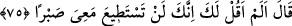

Ben sizin hepinizden önce müslüman oldum.
Küçük bir yaşta ki, henüz bülûğa ermemiştim.
Yâni Ali (r.a.) müslüman olduğu zaman sekiz yaşındaydı. O zaman çocuklar mükellef
sayılırlardı. Çünkü sabî çocuktan mükellefiyetin kaldırılışı ile ilgili hadis Hayber
yılında vârid olmuştu.
el-İrşâd’da der ki: Îmandan sonra küfre dönmek (irtidâd), evlendikten sonra zina gibi
kanın dökülmesini mubah kılan diğer fiiller arasında özellikle bir cana karşılık olan
kısası gerektirecek bir durumun bu çocukta bulunmadığının zikredilmesi, çocuğun
durumuna nazaran vâkıaya daha uygun olmasından dolayıdır.
Bir hadiste: “Hızır (a.s.)’ın öldürdüğü çocuk tabiat olarak kâfir idi.”[212]
buyrulmuştur. Eğer: “Hz. Peygamber (s.a.) diğer bir hadisinde: “Her doğan İslâm
fıtratı üzere doğar.”[213] buyurduğuna göre önceki hadisin mânâsı nedir?” dersen, şöyle
cevap veririm: “Fıtrat” ile kastedilen, İslâm’ı kabûle istidadlı olmasıdır. Bu ise onun
yaratılışta şakî olmasına mâni değildir. Ya da “fıtrat” ile kastedilen, Allah Teâlâ’nın
“Ben sizin Rabbiniz değil miyim?” dediği zaman bütün ruhların “Evet (Rabbimizsin)”
(el-A’râf, 7/172) demeleridir.
Nevevî şöyle der: “O’nun anne babası mü’min ise çocuğun da mü’min olması
gerekirdi. Bu durumda -En iyisini Allah bilir- hadisin mânâsı: “Şâyet bu çocuk bülûğa
ulaşsaydı kâfir olacaktı” diye te’vil edilebilir.”
“Gerçekten sen fena bir şey yaptın!” Bu birincisinden daha kötü ve çirkin bir fiildir.
Çünkü önceki, geminin yan tarafında bir delik açmak olup kapatılmak sûretiyle telâfî
edilebilir. Öldürmenin ise böyle bir telâfisi yoktur.
Önceki hâdise hakkında kötü anlamında kullanılan “imran” kelimesi, buradaki
“nükran” kelimesinden daha ağırdır, denilmiştir. Çünkü bir kişiyi öldürmek,
gemidekilerin tamamını boğmanın yanında daha hafiftir.
Kıraat âlimlerinden bir topluluk, Kur’an’ın yarısının/ortasının bu âyetin sonu
olduğunu söylemiştir.
75. (Hızır:) Ben sana, benimle beraber (olacaklara) sabredemezsin, demedim mi?
dedi.
Bu cümle, vasiyeti terk ettiğinden dolayı Mûsâ (a.s.)’ı bir nevi azarlamadır. “
Leke/sana” lafzının ilâvesi, azarın şiddetini artırmak ve te’kid etmek içindir. Çünkü
Mûsâ (a.s.), ahdini iki defa bozmuştur.